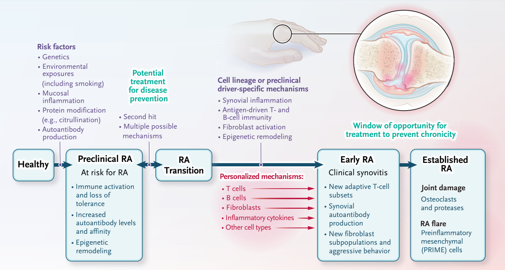
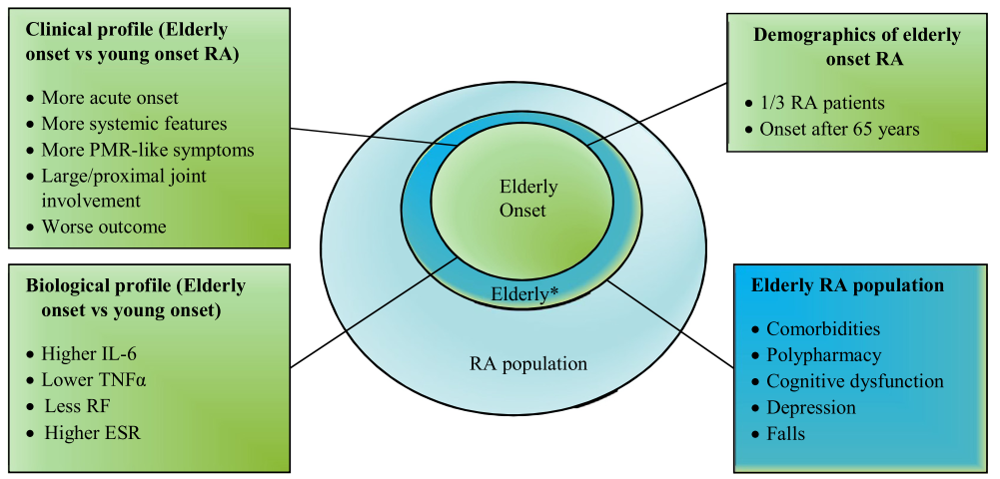
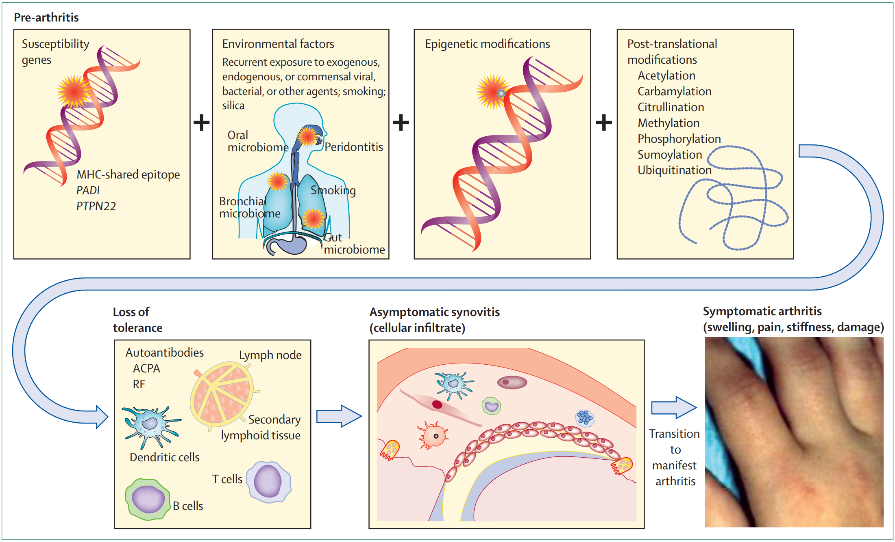
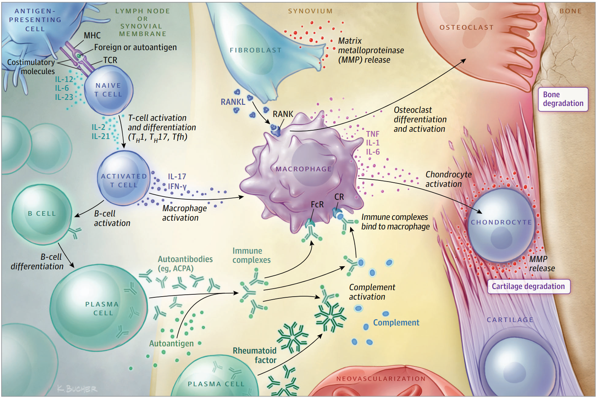
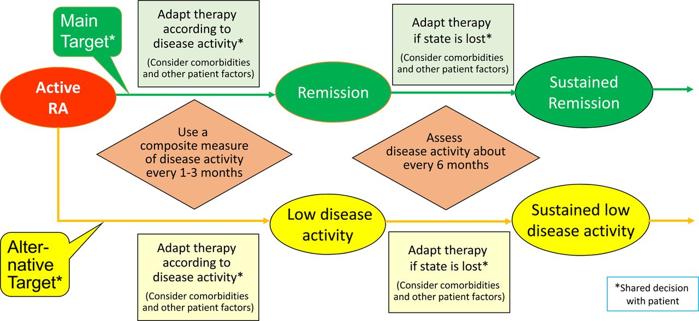
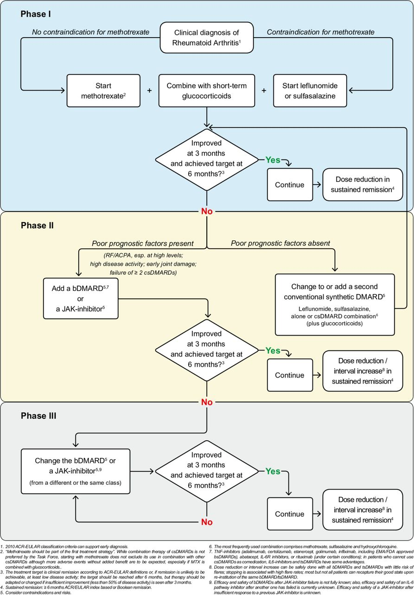
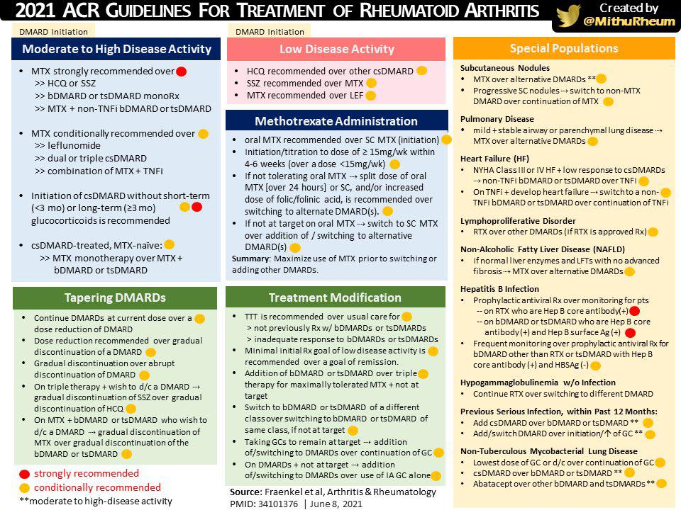
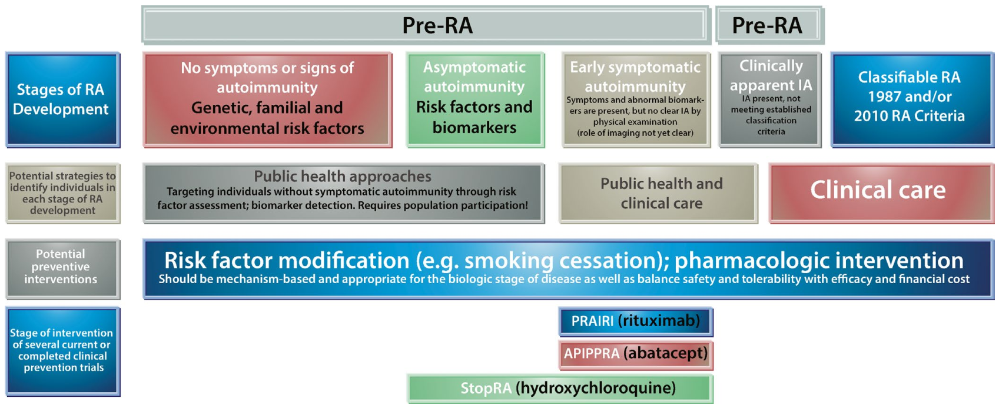

Rheumatoid Arthritis
류마티스관절염 (Rheumatoid Arthritis; RA)은 주로 작은 관절들을 대칭적으로 침범하여 관절의 부기와 통증이 발생할 뿐만 아니라 다양한 관절 외 증상을 유발하는 만성 전신 자가면역질환이다.
[분류]
1. 질환의 경과에 따른 분류

| 단계 | 설명 |
|---|---|
| Preclinical RA | 건강한 개인이 유전/환경/면역학적 위험인자가 있을 때 (At risk for RA)로, 이 상태에서는 명확한 synovitis는 없거나 (무의미할 정도로) 심하지 않은 상태라고 볼 수도 있다. |
| (RA Transitions) | Preclinical RA 상태에서 second hit이 작용하여 어떤 식으로든 autoantibody가 형성되면 명백한 'arthritis' 까지는 아니더라도 'arthralgia'를 호소할 수 있을 것이다. 이 시기까지는 second hit을 최대한 억제한다면 질환의 진행을 예방해 볼 수도 있겠으나, 이런 저런 요건들이 얽혀서 RA로 진행 혹은 전이 (Transition) 된다. |
| Early RA | Second hit 이후 자가항체의 형성 및 다양한 면역학적 과정의 결과로 임상적으로 염증성 관절염 (Inflammatory 'Arthritis')를 확인할 수 있으나 분류기준을 완전히 만족하지 못하는 상태 |
| Established RA | Synovitis/Arthritis가 점차 진행되어 분류기준에 따라 임상적으로 RA로 분류할 수 있는 상태 |
참고
- 이 분류는 RA 진행양상의 개념을 설명하기 위함이다. preclinical RA 상태를 사전에 (할 수 있다면)선별하여 RA transition에 영향을 미치는 인자를 제거하면 RA를 예방할 수 있고, (예방까지는 아니더라도) RA를 최대한 빨리 발견하여 치료를 시작하는 것이 중요하기 때문이다. (다만 개념적으로 그렇다는거지 preclinical RA를 무슨 수로 미리 알 수 있겠는가...)
- 주로 작은 관절의 이동성 관절통 (migratory arthralgia)을 특징으로 하는 재발성 류마티즘 (Palindromic rheumatism)을 preclinical RA와 Early RA의 중간 정도 단계로 보기도 한다. 특히 손관절 침범과 함께 검사 소견에서 CCP가 양성이라면 약 1/3 정도에서는 RA로 진행한다고 알려져 있다.
2. 질환의 발생 연령에 따른 분류
- 일반적으로 RA는 중년의 여성에게서 호발하는 질환이나, 더러 첫 발병 시기가 고령 (60대 이후)인 경우가 있는데 이것을 Elderly-Onset RA (EORA)라고 한다. 이와 상대되는 개념으로 (일반적인 사례와 같이) 젊은 시기에 발생한 경우를 Young-Onset RA (YORA)라고 한다. 이것을 구분하는 이유는, YORA와 EORA의 임상 양상이 다소 다르기 때문이다. 또한, 임상적으로 RF/CCP 음성인 seronegative EORA는 PMR과 엄밀하게 구분이 잘 되지 않는 경우도 많아서 Rheumatologist들을 힘들게 한다.

| Features | EORA | YORA |
|---|---|---|
| Female:rnale ratio | 2:1 | 4:1 |
| PMR-like onset | 25% | N.E. |
| Comorbidities | 50~75% | <10% |
| Polypharmacology | >70% | <10% |
| Treatments | Influenced by comorbidities Usually not aggressive. |
More frequent use of synthetic and biological DMARD. |
| Prognosis | Lower remission rates. more radiographic progression, higher HAQ scores. Mortality and disabilities are more frequent. |
[역학 및 발병 인자]
1. 역학
| 전세계 | 국내 | |
|---|---|---|
| 성비 | 여성 > 남성 (3배) | |
| 주 발병 연령 | 40대~70대 | |
| 유병률 | 0.3~1% | 1.4% |
| 발병률 | 5~50명/10만 명 | 42명/10만 명 |
2. 병인과 위험 요인

- 감수성 유전자를 가지고 있어서 유전적 소인이 있는 사람이 환경적 손상, 후성유전적 변이, 번역후 수정 (post-translational modification)을 겪게 되면 면역 관용 (tolerance)을 잃게 되고, 이후에 무증상 활막염을 거쳐 궁극적으로는 임상적으로 분명한 관절염을 앓게 된다.
| 요인 | 분류 | 항목 |
|---|---|---|
| 유전적 요인 | HLA-Related | HLA-DRB1이 가장 위험한 인자 |
| ^^ | Non-HLA | PADI4, STAT4, PTPN22, TRAF1-C5 등 |
| 환경적 요인 | Favorable | 비타민D, 오메가3 |
| ^^ | Non-favorable | 흡연, 치주염, 장내세균, 감염 (EBV, Parvovirus B19), 하루 10잔 이상의 커피소모, 조기폐경, 경구피임약 사용, 비만, Low socioeconomical state |
[병태생리]

- 자가항원(예: 시트룰화 후) 또는 자가항원과 교차반응하는 박테리아 또는 바이러스 펩타이드와 같은 외래 펩타이드는 MHC class II 분자를 통해 항원제시 세포에 의해 naive T 세포에 제시된다.
- T세포는 활성화된 후 TH1, TH17 또는 Tfh 세포로 분화되어 대식세포를 활성화하고 B세포에도 도움을 줄 수 있는 림포카인을 방출한다.
- B세포는 자가 항체를 분비하는 혈장 세포로 분화한다. 자가항체는 각각의 자가항원체에 결합하여, 활막(synovium)에서 면역복합체를 형성한다.
- 면역 복합체는 Fc portion을 통해 다른 B세포를 유도하여 항 IgG 항체를 형성하여 면역 복합체를 확장하고 보체 활성화를 증가시킬 수 있다.
- 면역 복합체는 Fc 수용체를 통해 대식세포와 다른 세포와 결합할 수 있고, 이 결과 IL-6, TNF, IFN-γ, IL-17와 같은 염증유도 cytokine이나 염증 매개체들을 분비할 수 있다.
- nuclear factor κB (RANK) 리간드 (RANKL) 의 receptor activator를 발현하는 섬유모세포는 특히 염증유도 cytokine 존재 하에서 대식세포를 활성화시켜 파골세포를 통해 파골세포로 분화할 수 있으며, 이 과정은 연골과 뼈 사이의 접합점에서 시작한다. 이들 사이토카인은 또한 연골을 분해하는 효소를 분비하도록 연골세포를 활성화시킨다.
[임상증상]
1. 초기 관절 증상
- 수주 ~ 수개월에 걸쳐 서서히 나타나는 여러 관절의 tenderness, stiffness, swelling
- 단관절의 반복적 or 이동성 관절침범 (Recurrent & migratory) : 수시간~수일 동안 증상이 있다가 소실 후 수개월 후 비슷한 증상이 재발하는 재발류마티즘 (palindromic rheumatism)도 발생
- 1시간 이상의 조조강직 (Morning stiffness)이 있다고는 하나, 조조강직의 지속 시간으로 RA와 OA를 감별할 수는 없다.
2. 초기 관절 외 증상
- 피로감, 전신통증, 체중감소, 우울감 등의 비특이적인 증상이 나타날 수는 있으나, 일반적으로 전형적인 관절외증상은 RA가 장기간 지속되고 잘 조절되지 않을 때 주로 발생한다.
3. 관절증상
- Wrist, MCP, MTP, PIP를 주로 침범, Elbow, Shoulder, Ankle, Knee, Hip joint도 침범한다.
- 장기간 지속된 RA환자는 C1~2를 침범하여 Atlantoaxial subluxation이 유발되기도 한다.
- C1~2 이외 다른 axial spine에 직접적으로 침범하지는 않는다.
만약 RA환자가 back pain을 호소한다면 Sprain, HNP, Spinal Stenosis, fracture 등의 다른 원인을 감별 해야 한다. - 이외 AC joint, SC joint, TMJ, Cricoarytenoid joint도 침범할 수 있다.
- 초기의 중요한 소견은 침범 된 관절의 tenderness와 swelling. 기본적으로 synovitis/tenosynovitis라서 OA의 bony erosion과 달리 비교적 말랑말랑한 편이다.
- 이외 Hand grip strength의 감소, Trigger finger, CTS 증상도 발생 가능
- 더 진행하면 Ulnar drift, swan neck, Boutonniere deformities, Digital infarction (d/t vasculitis), radial drift 등의 관절 변형 증상이 나타날 수 있다.
4. 관절 외 증상
| System | 증상 |
|---|---|
| 전신증상 | 전신통증, 뻣뻣함, 미열, 체중감소, 피로감, 우울감 |
| CV | myocarditis, myositis, CAD 등 |
| PD | Interstitial pneumonitis (UIP, NIP), organizing pneumonia (OP, BOOP, COP), Caplan's syndrome (pneumoconiosis + multiple peripheral basilar nodule), pleuritis (RA or MTX or Leflunomide) |
| KD&URO | Focal GN, MN |
| HD | Felty's syndrome (neutropenia, thrombocytopenia, splenomegaly), ACD, DLBCL |
| NR | compressive myelopathy, mononeuritis multiplex |
| Skin | rheumatoid nodule (elbow), skin ulcer |
| EYE/Ent | 상공막염, 공막염, ulcerative keratitis, keratoconjunctivitis sicca (10~20%) |
| Vascular | 주로 small ~ medium sized vessel : PAN과 유사한 양상 |
| Muscular | synovitis, myositis, vasculitis, drug-induced myopathy |
| Skeletal | Bone loss, osteoporotic fracture & hip fracture |
- CV
- Pericarditis가 발생할 수는 있으나 tamponade는 드물다.
- RA는 Sudden cardiac death의 주요 위험 인자이며, CAD의 위험도가 증가한다.
- PD
- ILD, Organizing Pneumonia, Pulmonary nodule 등이 발생할 수 있다.
- RA-ILD는 주로 UIP 또는 NSIP pattern으로 나타난다.
- Caplan's syndrome: RA+pneumoconiosis+Multiple peripheral basilar nodules
- Pericarditis: Pericardial effusion을 유발할 수 있고, 이 때 pericardial exam 결과는 TB pericarditis와 유사(Lymphodominant, ADA 상승)하다. 이 경우 effusion의 원인이 RA인지 TB인지는 임상적 맥락에 따라 판단해야 한다.
- Drug-induced pleuritis: MTX나 Leflunomide가 유발할 수는 있다고 되어 있다. 과거 Lung pathology (특히 ILD)가 있을 때 MTX를 쓰지 말라고 하던 적이 있었지만, 현재 진료권장사항에는 lung pathology와 무관하게 MTX를 쓸 수 있도록 하고 있다.
- KD/URO
- 질환 자체의 문제라기보다는 주로 약물 (e.g., NSAIDs 등)에 의한 신장손상이 발생한다.
- HD
- ACD: normochronic normocytic anemia가 흔한데, hepcidin 대사의 장애로 인한 ACD가 IDA보다는 더 많은 편이다. (IDA가 없는 것이 아니다)
- Felty syndrome: Felty's syndrome (neutropenia, thrombocytopenia, splenomegaly)
- Lymphoma/Leukemia: DLBCL가 흔하고, RA 자체가 AML의 위험인자이기도 하다.
- NR
- CTS는 비교적 흔하다. 물론 이 CTS가 RA때문이라고 하기엔 좀 애매할 수도 있겠다.
- AAS로 인해 C1-2 instability가 발생하면 compressive myelopathy가 발생할 수도 있다.
- Vasculitis가 동반된 경우 Mononeuritis multiplex나 polyneuropathy가 발생할 수도 있다.
- Skin
- Rheumatoid Nodule: 주로 RF양성인 환자에게서 발생하며, 주로 Olecranon 주변에 생기지만 lung/heart 등의 내부장기에 발생하기도 한다.
- Skin ulcer: RA와 연관된 vasculitis로 인한 소견이다.
- Eye/ENT
- Scleritis, ulcerative keratitis가 발생할 수 있다.
- RA는 Sjogren's syndrome을 동반하는 경우가 많고, KCS 증상도 10~20% 정도에서 발생한다.
- Vascular
- 전신적으로는 PAN과 유사한 양상으로 나타날 수 있다고 한다.
- 근육통/근력악화, 피부병변 등이 발생할 수 있다.
- Musculoskeletal
- 질환 자체의 문제 + 약물의 영향으로 bone loss와 osteoporosis의 위험도가 증가한다.
- Synovitis로 인해 관절주위 근육의 괴사/위축이나 근육염증이 발생할 수 있다.
- 약물로 인한 myopathy (e.g., GC, HCQ, Statin 등)이 발생할 수도 있다. 비교적 dose-dependent한 양상을 보이므로 약을 줄인 후 호전 여부를 봐야 한다.
[검사소견]
1. 혈액검사
- RF : 정상인의 5%에서 양성, 65세 이상일 때 10~15%에서 양성, 고역가일 때 extra-articular manifestation이 많아 예후 예측에 도움이 된다.
- Anti-CCP : RA에 특이적, 질환 발병 수년 전부터 양성으로 나옴, 양성일 때 관절 파괴가 더 많이 진행, 흡연과 고역가가 연관이 있음.
- CRP, ESR : 예후와 연관, 지속적 상승은 질병의 지속적인 진행으로 인한 방사선적 진행과 상관관계 있음.
2. 영상검사
- X-ray : 대칭적인 관절 침범 및 미란 (Hand → foot → knee → hip → shoulder → elbow), 주로 MCP, PIP에서 잘 보임. ![[Pasted image 20230808210542.png]]
- MSUS : 초기에 2nd MCP, 5th MTP에서 erosion이 잘 발견됨 ![[Pasted image 20230808211007.png]]
- MRI : 비용이 비싸고 영상을 얻는 데 까지 걸리는 시간이 오래 걸리기 때문에 RA를 진단하는 목적으로는 잘 시행하지 않고, synovitis와 soft tissue infection을 감별하기 위해 주로 시행하는 편이다.
[진단]
1. 분류기준
- 2010 Criteria : 조기에 분류(진단)해서 관절파괴가 일어나기 전에 적절히 치료하려는 목적.
- 1987 Criteria : 다소 진행된 형태의 RA를 진단할 때 유용.
2010 ACR/EULAR RA classification criteria
| Target population (Who should be tested?): Patients who | |
|---|---|
| 1. Have at least one joint with definite clinical synovitis (swelling) | |
| 2. With the synovitis not better explained by another disease† | |
| Note | |
| The criteria are aimed at classification of newly presenting patients. In addition, patients with erosive disease typical of rheumatoid arthritis (RA) with a history compatible with prior fulfillment of the 2010 criteria should be classified as having RA. Patients with longstanding disease, including those whose disease is inactive (with or without treatment) who, based on retrospectively available data, have previously fulfilled the 2010 criteria should be classified as having RA. | |
| †Differential diagnoses vary among patients with different presentations but may include conditions such as systemic lupus erythematosus, psoriatic arthritis, and gout. If it is unclear about the relevant differential diagnoses to consider, an expert rheumatologist should be consulted. | |
| ACR/EULAR Classification criteria for RA | |
|---|---|
| A. Joint involvement§ | Score |
| 1 large joint∥ | 0 |
| 2–10 large joints | 1 |
| 1–3 small joints (with or without involvement of large joints)¶ | 2 |
| 4–10 small joints (with or without involvement of large joints) | 3 |
| >10 joints (at least 1 small joint)** | 5 |
| B. Serology (at least 1 test result is needed for classification)†† | Score |
| Negative RF and negative ACPA | 0 |
| Low-positive RF or low-positive ACPA | 2 |
| High-positive RF or high-positive ACPA | 3 |
| C. Acute-phase reactants (at least 1 test result is needed for classification)‡‡ | Score |
| Normal CRP and normal ESR | 0 |
| Abnormal CRP or abnormal ESR | 2 |
| D. Duration of symptoms§§ | Score |
| <6 weeks | 0 |
| ≥6 weeks | 1 |
| Note | |
| ‡Although patients with a score of 6 of 10 are not classifiable as having RA, their status can be reassessed, and the criteria might be fulfilled cumulatively over time. | |
| §Joint involvement refers to any swollen or tender joint on examination, which may be confirmed by imaging evidence of synovitis. Distal interphalangeal joints, first carpometacarpal joints, and first metatarsophalangeal joints are excluded from assessment. Categories of joint distribution are classified according to the location and number of involved joints, with placement into the highest category possible based on the pattern of joint involvement. | |
| ∥“Large joints” refers to shoulders, elbows, hips, knees, and ankles. | |
| ¶“Small joints” refers to the metacarpophalangeal joints, proximal interphalangeal joints, second through fifth metatarsophalangeal joints, thumb interphalangeal joints, and wrists. | |
| **In this category, at least one of the involved joints must be a small joint; the other joints can include any combination of large and additional small joints, as well as other joints not specifically listed elsewhere (e.g., temporomandibular, acromioclavicular, sternoclavicular). | |
| ††Negative refers to IU values that are less than or equal to the upper limit of normal (ULN) for the laboratory and assay; low-positive refers to IU values that are higher than the ULN but ≤3 times the ULN for the laboratory and assay; high-positive refers to IU values that are ≥3 times the ULN for the laboratory and assay. When rheumatoid factor (RF) information is only available as positive or negative, a positive result should be scored as low positive for RF. | |
| ‡‡Normal and abnormal are determined by local laboratory standards. | |
| §§Duration of symptoms refers to patient self-report of the duration of signs or symptoms of synovitis (e.g., pain, swelling, tenderness) of joints that are clinically involved at the time of assessment regardless of treatment status. | |
| 대상 집단(누가 검사를 받아야 합니까?): 환자들 중 | |
|---|---|
| 1. 적어도 하나의 관절에 확실한 임상 활막염(종창)이 있음 | |
| 2. 다른 질환으로 더 잘 설명되지 않는 활막염† | |
| Note | |
| 이 기준은 새로 내원하는 환자를 분류하기 위한 것이다. 또한, 환자가 류마티스관절염(RA)의 전형적인 골미란성 질환을 보이면서 2010년 분류기준을 충족할 만한 이전의 병력이 있었다면 RA가 있는 것으로 분류해야 한다. 환자가 장기간 질병이 있는 경우, 질병이 비활성(치료 유무에 관계없이)인 환자를 포함하여, 후향적으로 이용 가능한 데이터에 기초하여 이전에 2010년 기준을 충족한 환자들도 RA가 있는 것으로 분류되어야 한다. | |
| †감별 진단은 서로 다른 증상을 보이는 환자들마다 다양할 수 있는데, 전신성 홍반성 루푸스, 건선성 관절염 및 통풍과 같은 질환을 포함할 수 있다. 고려해야 할 감별진단이 불확실한 경우에는 경험이 많은 류마티스전문의와 상의해야 한다. | |
| 환자가 명확한 RA가 있다고 분류하기 위해서는 10점 중 6점 이상이 있어야 한다. | |
|---|---|
| A. 관절침범§ | 점수 |
| 1개 큰관절∥ | 0 |
| 2–10개 큰관절 | 1 |
| 1–3개 작은 관절 (큰관절이 포함될 수도 있다)¶ | 2 |
| 4–10개 작은 관절 (큰관절이 포함될 수도 있다) | 3 |
| >10개 관절 (최소한 1개의 작은 관절)** | 5 |
| B. 혈청검사 (최소한 1개의 검사 결과가 분류를 위해 필요함)†† | 점수 |
| 음성 RF 그리고 음성 ACPA | 0 |
| 약양성 RF 또는 약양성 ACPA | 2 |
| 강양성 RF 또는 강양성 ACPA | 3 |
| C. 급성기 반응 물질 (최소한 1개의 검사 결과가 분류를 위해 필요함)‡‡ | 점수 |
| 정상 CRP 그리고 정상 ESR | 0 |
| 비정상 CRP 또는 비정상 ESR | 2 |
| D. 증상 지속 기간§§ | 점수 |
| <6주 | 0 |
| ≥6주 | 1 |
| Note | |
| ‡환자가 10점 중 6점 미만인 경우 RA로 분류할 수는 없으나, 환자의 상태를 재평가할 수 있고, 이 분류기준은 시간이 지남에 따라 누적적으로 충족될 수 있다. | |
| §관절 침범은 검사상 부어 오르거나 압통이 있는 관절을 말하며, 이는 활막염의 영상 증거로 확인할 수 있다. DIP, 1st CMC, 1st MTP joint는 평가에서 제외한다. 관절 분포의 범주는 침범된 관절의 위치와 수에 따라 분류되며, 관절 침범 양상에 따라 가능한 가장 높은 범주에 할당한다. | |
| ∥'큰관절'은 어깨, 팔꿈치, 엉덩이, 무릎, 발목관절을 뜻한다. | |
| ¶'작은 관절'은 MCP, PIP, 2~5th MTP, Thumb IP, wrists를 뜻한다. | |
| **이 범주에서, 침범된 관절 중 최소 1개는 작은관절이어야 한다; 다른 관절은 큰관절과 추가적인 작은관절이 혼합되어 침범되어도 되고 이 분류기준에서 명시되지 않은 다른 관절 또한 포함된다. (e.g. TMJ, AC, SC joint) | |
| ††음성은 실험실 및 분석키트에서 제시하는 정상 상한(ULN)보다 작거나 같은 IU 값을 나타낸다. 약양성은 ULN보다 높지만 실험실 및 분석키트에서 제시하는 ULN의 3배 이하인 IU 값을 나타낸다. 강양성은 실험실 및 분석키트에서 제시하는 ULN의 ≥3배인 IU 값을 나타낸다. 류마티스 인자(RF) 정보가 양성 또는 음성으로만 제공되는 경우 양성 결과는 RF에 대해 약양성으로 점수를 매겨야 한다. | |
| ‡‡정상 혹은 비정상은 개별 실험실 기준에 의해 결정된다. | |
| §§증상 지속 기간은 치료 상태에 관계없이 평가 시점에 임상적으로 관련된 관절의 활막염의 징후 또는 증상(예: 통증, 부기, 압통)의 지속 기간에 대해 환자가 스스로 보고하는 것을 의미한다. | |
1987 ACR RA classification criteria
| For classification purposes, a patient has RA if at least four of these criteria are satisfied (the first four must have been present for at least six weeks). |
|
| Criterion | Definition |
|---|---|
| Morning stiffness | Morning stiffness in and around the joints, lasting at least one hour before maximal improvement. |
| Arthritis of three or more joint areas | At least three joint areas (out of 14 possible areas; right or left PIP, MCP, wrist, elbow, knee, ankle, MTP joints) simultaneously have had soft tissue swelling or fluid (not bony overgrowth alone) as observed by a physician. |
| Arthritis of hand joints | At least one area swollen (as defined above) in a wrist, MCP, or PIP joint. |
| Symmetric arthritis | Simultaneous involvement of the same joint areas (as defined above) on both sides of the body (bilateral involvement of PIPs, MCPs, or MTPs, without absolute symmetry is acceptable). |
| Rheumatoid nodules | Subcutaneous nodules over bony prominences or extensor surfaces, or in juxta-articular regions as observed by a physician. |
| Serum rheumatoid factor | Demonstration of abnormal amounts of serum rheumatoid factor by any method for which the result has been positive in less than 5 percent of normal control subjects. |
| Radiographic changes | Radiographic changes typical of rheumatoid arthritis on posteroanterior hand or wrist radiographs, which must include erosions or unequivocal bony decalcification localised in, or most marked adjacent to, the involved joints (osteoarthritis changes alone do not qualify). |
| 분류목적으로, 환자가 RA가 있다고 하려면 이 기준 중 최소 4개를 만족해야 한다. (첫 네 항목은 반드시 최소 6주는 존재해야 한다.). |
|
| 기준 | 정의 |
|---|---|
| 조조강직 | 조조강직이 관절 내부와 주변부에 있으며, 가장 좋아질 떄 까지 최소한 1시간은 지속된다. |
| 3개 이상 관절부위의 관절염 | 최소 3개 이상 관절부위 (14개의 가능한 부위: Both PIP, MCP, wrist, elbow, knee, ankle, MTP joints)에 연부조직 부종이나 관절액 (뼈 융기만 있어서는 안됨)이 의사에 의해 관찰됨. |
| 손가락 부위 관절의 관절염 | wrist, MCP, PIP 관절 중 최소한 한 개 부위는 부어있어야 함. (부종은 위 항목에서 정의됨) |
| 대칭적 관절염 | 2번에 정의된 관절을 양측성으로 동시에 침범 (PIP, MCP, Wrist, MTP는 완전 대칭이 아니어도 가능함) |
| 류마티스결절 | 뼈가 튀어나온 부위나 폄근 표면 위, 또는 관절 주변에 피하 결절이 의사에 의해 관찰됨. |
| 혈청 류마티스 인자 양성 | 비정상적인 양의 혈청 류마티스 인자가 정상 대조군의 5% 미만에서 양성 반응이 나온 방법(종류에 상관 없이)을 사용해서 확인되는 경우 |
| 영상의학적 변화 | 손이나 손목의 PA 영상검사에서 전형적인 류마티스관절염의 영상의학적 변화가 보이는 경우로, 침범된 관절 내 혹은 인접한 부위에 골미란이나 균일하지 않은 골 탈석회화가 반드시 포함되어야 함. (골관절염 변화 단독만으로는 해당되지 않음). |
2. 감별진단
| DDx. | 감별질환의 특징 (감별포인트) |
|---|---|
| OA | DIP 침범, Heberden nodule, morning stiffness < 30min, X-ray상 JSN |
| Palindromic rheumatism | migratory arthralgia (Behcet's ds.와도 감별하자) |
| FMS | no arthritis/synovitis, no APR elevation, Tender point 유무 등 |
| Seronegative RA | 향후 RF/ACPA 양성 여부 경과관찰 |
| Reactive arhritis | 선행하는 urogenital/enteric invection + Sacroilitis + HLA-B27 (+) 유무, Dactylitis 등 |
| Psoriatic arthritis | 피부/손톱변화, 소시지손가락 (dactylitis), 척추침범, 절단관절염 (arthritis mutilans) |
| Crystalopathies | uric acid level, medication, attack 양상 등 |
| Infection-associated | Parvovirus, HBV, HCV, Mumps, EBV등 |
[치료]
1. 치료의 원칙: T2T

- Main Target: DAS28 or CDAI or SDAI or ACR/EULAR remission definition 등의 지표를 활용해서 Remission에 도달하는 것이다.
- 실제로 Remission에 도달하기에는 매우 어렵기 때문에, 위 지표의 Low disease activity(LDA)에 도달하는 것이 alternative target이 된다.
- LDA든 Remission이든, 매 1~3개월 마다 Disease activity를 확인하고 그 지표에 맞게 약물을 조절해야 하며, 일단 target에 도달했다면 그 상태를 지속적으로 유지할 수 있도록 (최소한) 매 6개월마다 평가를 해서 약물을 조절해야 한다.
2. 약물
| Subgroup & Type | Product name | Molecular Target | Dose | Comments |
|---|---|---|---|---|
| Synthetic DMARDs | ||||
| Conventional : 경험적으로 (empirical) 사용 후 효과가 입증되어 승인된 약물로 구체적 표적은 불확실함. | ||||
| Methotrexate (MTX) | MTX | Unknown | 7.5~15mg/WEEK | 국내에서는 대체로 7.5~10mg/w에서 시작해서 1~2개월 내에 최대 15mg/w까지 증량. 반드시 folate(folsan) 1mg/day를 같이 처방! |
| Sulfasalazine (SSZ) | Zopyrin | Unknown | 1~3g/d | 500mg BID (1g/day)로 시작해서 1~2개월 내에 최대 3g/day 까지 증량 |
| Leflunomide (LEF) | Arara (R-A tab) |
Dihydroorotate dehydrogenase | 10~20mg/d | 10mg/d 또는 20mg/d로 처방. Diarrhea, LFT 상승, neuropathy 등 발생 가능. Cholestyramine washout : 8g TID for 11 days |
| Hydroxychloroquine (HCQ) | Oxyklorin | Unknown | 200~400mg/d | Retinopathy 발생 가능성 때문에 ≤5mg/kg 으로 사용한다. 증상이 매우 가벼운 경우가 아니라면 대개 다른 DMARDs와 병용한다. |
| Targeted : 특정한 표적 (JAK pathway)에 작용하도록 만들어진 DMARD. | ||||
| Tofacitinib (TOF) | Xeljanz | JAK 1, 2, 3 | 5mg BID | [주요부작용] Herpes zoster, cytopenia, Dyslipidemia, CPK elevation [보험기준] TNF inhibitors와 동일 |
| Baricitinib (BAR) | Olumiant | JAK 1, 2 | 4mg DB | |
| Upadacitinib (UPA) | Rinvoq | JAK 1 | 15mg DB | |
| Biologic DMARDs | ||||
| TNF-inhibitor | ||||
| Adalimumab (ADA) | Humira (Adaloce) |
TNF | 40mg / 2 weeks SC | * Adalimumab/Infliximab/Golimumab은 MTX와 병용 [IGRA 확인] (+)시 INH prophylaxis (5mg/kg, maximum 300mg for 9 months) 최소 3주 시행 후 bDMARD를 사용 [보험기준] ACR/EULAR 진단기준(2010)에 부합하는 환자중 다음 한가지에 해당: |
| Etanercept (ETA) | Enbrel (Etoloce, Eucept) |
TNF | 50mg/week SC | |
| Infliximab (INF) | Remicade (Remsima, Remaloce) |
TNF | 3mg/kg (RA), 5mg/kg (RA이외) 0,2,6주, 이후 8주마다 IV |
|
| Golimumab (GLM) | Simponi | TNF | 50mg/month SC | |
| Certolizumab | Cimzia | TNF | 200mg / 2 weeks SC | |
| IL-6 receptor | ||||
| Tocilizumab (TOC) | Actemra | IL-6 Rc. | 8mg/kg/month IV | [보험기준] TNF inhibitors와 동일 * 다른 biologics보다 CRP를 정상화시키는 데에는 탁월한 효과가 있다. |
| Sarilumab (SAR) | Kevzara | IL-6 Rc. | 150~200mg / 2 weeks | |
| Anti-B cell | ||||
| Rituximab (RTX) | Mabthera (Truxima) |
CD20 | 1000mg IV / 6 months | [보험기준] ACR/EULAR 진단기준(2010)에 부합하는 환자 중 1종 이상의 TNF-a inhibitor에 반응이 불충분하거나 부작용 등으로 치료를 중단한 중증의 활동성 RA |
| Anti-T cell co-stimulation | ||||
| Abatacept (ABA) | Orencia | CD80/86 | 125 mg/week SC | [보험기준] TNF inhibitors와 동일 * RA-ILD에서 좀 더 favorable하다. |
3. 비약물치료
4. 치료 지침 (Recommendation)
2019 EULAR Treatment Guidelines

2021 ACR Treatment Guidelines

5. 동반질환의 관리
- 약 20% 정도의 환자는 중등도 이상의 심각한 동반질환이 있다고 한다.
1. 심혈관질환
- RA환자의 심혈관 위험도 관련 인자: 고혈압, 흡연, 당뇨병, 고령, 이상지질혈증, RA 이환 기간 ( ≥10년), RF/CCP 양성, 관절외증상, CRP상승, NSAIDs/GC 사용
- RA환자의 사망률을 높이는 가장 많은 원인
- RA의 심혈관질환 위험도 증가는 DM의 위험도 증가와 비슷하다고 알려짐.
- RA의 만성염증이 심혈관 문제를 일으키는 주된 원인이므로 염증 자체를 조절하는 것이 중요하다.
2. 감염
- RA환자의 감염 위험도를 증가시키는 인자: 고령, 관절외증상, 백혈구감소증, 동반질환, GC 사용, 생물학적제제 사용
- cDMARDs 사용은 감염 위험을 높이지 않는다. bDMARDs는 용량이 많아질 수록 위험도가 높아진다.
- GC 용량이 증가할 수록 감염 위험도가 증가한다. (GC<5mg/d인 환자의 감염 위험도: 1.32, GC>10mg/d인 환자의 감염 위험도:2.95)
3. 폐질환
- RA-ILD 위험인자: 고령, 남성, 흡연, RF/CCP 상승, 관절외증상
- RA환자 중 최대 60%에서 HRCT상 이상 소견이 보일 수 있다.
- ILD, pleural effusion, pneumothorac, BE, opliterative bronchiolitis 등이 유발됨.
- RA-ILD: 과거 MTX가 RA-ILD의 주 위험인자로 알려졌으나, 현재는 큰 관련 없다고 밝혀짐.
- RA 환자의 pleural effusion exam 결과는 TB pleurisy의 그것과 비슷하므로 임상적 맥락에서 판단해야 한다.
[Monitoring]
1. Disease Activity
| Disease activity measure | Scale | Remission | Low/minimal | Moderate | High/severe |
|---|---|---|---|---|---|
| [Patient-driven composite tools] : 환자가 평가 | |||||
| PAS | 0–10 | 0.00–0.25 | 0.26–3.70 | 3.71 to <8.0 | 8.00–10.00 |
| PAS-II | 0–10 | 0.00–0.25 | 0.26–3.70 | 3.71 to <8.0 | 8.00–10.00 |
| RAPID-3 | 0–10 | 0–1.0 | >1.0 to 2.0 | >2.0 to 4.0 | >4.0 to 10 |
| [Patient and provider composite tool] : 환자와 치료자가 평가 | |||||
| CDAI | 0–76 | ≤2.8 | >2.8 to 10.0 | >10.0 to 22.0 | >22.0 |
| [Patient, provider, and laboratory composite tools] : 환자와 치료자가 평가하고 lab 반영 | |||||
| DAS28 (ESR or CRP) |
0–9.4 | <2.6 | ≥2.6 to <3.2 | ≥3.2 to ≃5.1 | >5.1 |
| SDAI | 0–86 | ≤3.3 | >3.3 to ≤11.0 | >11.0 to ≤26 | >26 |
- PAS, PAS-II, RAPID-3는 환자가 작성하는 설문지로 구성되어 있다.
- 일반적으로 DAS28 (ESR or CRP), SDAI, CDAI가 사용되며, 우리나라 보험 기준상 DAS28-CRP를 가장 많이 사용한다.
- RA의 DAS (Disease Activity Score)는 원래 44개의 관절을 가지고 평가를 하는 것이었는데, 무릎 아래 관절을 제외한 28개 관절을 가지고 평가를 하는 것이 DAS28이다.
- 그렇다고 하여, RA에서 MTP 관절 침범이 중요하지 않는 것은 결코 아니다.
- ACR/EULAR의 remission 기준은 SDAI ≤3.3 또는 Boolean (TJC≤1 & SJC≤1 & CRP≤1mg/dl & PGA ≤1)을 만족하는 것이다.
2. Damage Index
- 일반적으로 RA에서의 비가역적 손상은 관절손상의 맥락에서 주로 판단한다.
- modified Sharp score
- OSRA
- RAAD score
[Outcome/Prognosis]

1. 일반적인 경과
- RA 환자의 10%는 6개월 내 자발적 관해, 15~20% 정도는 악화와 호전을 반복함.
- RA 발병 후 2년째에 방사선학적 골미란 (bony erosion)이 약 60~70%에서 관찰됨.
- RA 발병 후 20년째에 심혈관질환, 감염과 같은 합병증 발생이 증가함.
- 주요한 불량 예후인자: RF/CCP 양성, Shared epitope 존재, 진단시 erosion 존재, 진단시 높은 질병활성도, ESR/CRP 상승, 관절외 증상 또는 결절의 존재, 여성, 흡연 비만
2. 사망률
- 2000년대 이후 류마티스관절염 및 합병증 관리가 더 잘 이루어지면서, RA환자가 일반 인구에 비해 유의미하게 사망률이 증가하지는 않았다.
- 관절염 자체, 동반질환, 약물 부작용 등이 주된 문제이므로 꾸준한 관리가 필수적이다.